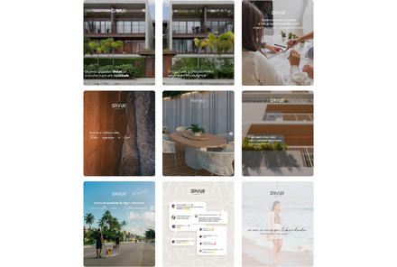
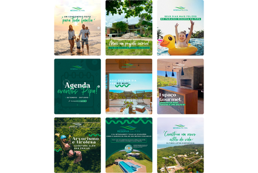
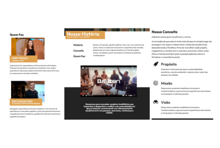
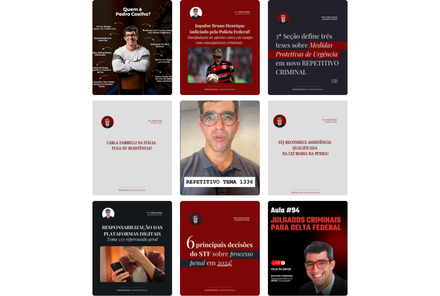
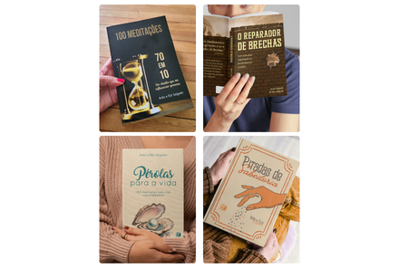
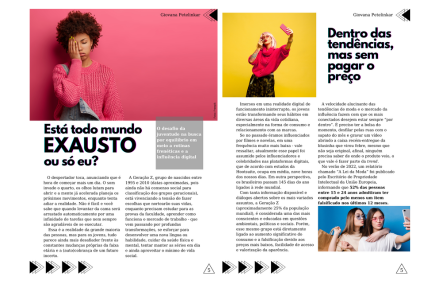
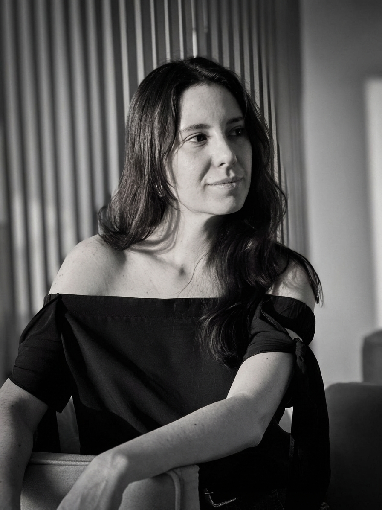

Portfólio Profissional
Uma boa história
muda tudo.
Mais do que juntar palavras, crio para traduzir pensamentos, sentimentos e ideias; transformando identidade em marca, estratégia em impacto, conceito em conexão.
Mais trabalhos

Davus Engenharia
Engenharia e Incorporações
Gestão de Redes Sociais · Redação · E-mails Marketing · Landing Pages · Site · Book de Empreendimento

Reserva da Pipa
Condomínio fechado
Gestão de Redes Sociais · Redação · E-mails Marketing · Landing Pages · E-Books Culturais

Bauten
Desenvolvimento Imobiliário
Redação Site Institucional · Book de Empreendimento

Pedro Coelho
Defensor Público Federal, Professor
Produção de Conteúdo para Redes Sociais · E-mail Funil de Vendas · Landing Pages

Arão e Elzi Salgado
Autores independentes
Edição de Texto · Revisão · Padronização Editorial

Revista Nassau
Revista digital
Produção de Artigos Público-Alvo para Geração Z
Sobre mim
Comunicação de verdade não tem fórmula — tem escuta, sensibilidade e intenção.
Com foco em redação estratégica e identidade de marca, atuo desde 2017 em segmentos como moda, construção civil, saúde, educação, política, fé, finanças, ONGs e autores independentes. Cada marca um novo universo, um novo jeito de se expressar.
Comunicar é tornar comum e, em um mundo repleto de mensagens, canais e, principalmente, ruídos, encontrar o espaço, a voz e a frequência certa é o que transforma barulho em impacto real.
Porque no fim, toda marca é uma história. E toda história merece ser bem contada.

Contato